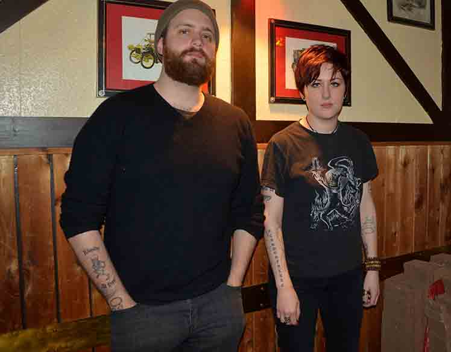
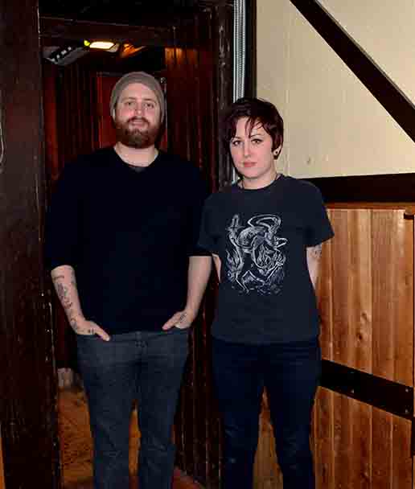
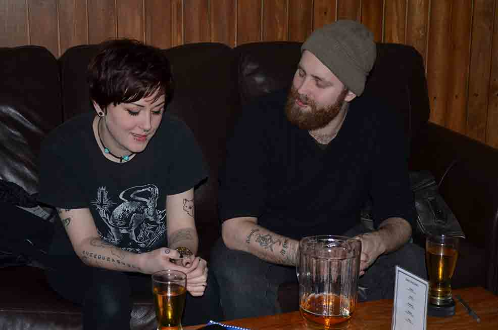

DEATH BY LINCOLN

Article by Julia Ho
Photos by Erin Kerbel
Uploaded on March 16, 2014
On a wintry Tuesday evening, the musical duo Death by Lincoln was nestled in the back sofas at the Imperial Pub, already a few pitchers deep. Greetings from the band were warm, and the usual awkward introductions were relieved with a fog of slight intoxication.
The pair—Alexander Dalgliesh-Switzer, 26, and Emily Hemmings, 26—is originally from Calgary and are both history students at Ryerson, third and first year respectively. Their band is usually a two-piece project with off-and-on additions.
“We are the nucleus,” says Dalgliesh-Switzer, who plays guitar and banjo, while Hemmings does vocals and guitar as well.
The duo is looking for professional musicians to join them, but say that it’s “hard to look for people that aren’t too good, but aren’t too bad either.”
Death by Lincoln was formed in Calgary four years ago. Dalgliesh-Switzer and Hemmings met in high school, but did not discover each other’s musical abilities until years later.
“She was playing me a cover, and I said, ‘Let’s start a band,’ so we wrote and recorded five songs in five hours and then uploaded then and then we were a band,” Daligesh-Switzer explains.
The idea for the name of the band came from a news story Hemmings had heard about.
|  |
“There was this woman in the [United States] who requested that all the doctors for the birth of all her children be white, and my friend said she needed to [be] beat by the constitution, and I thought of Death by Lincoln,” says Hemmings.
The band has gone by other names as well, such as Dr. Doomsdandyday, and originally had plans to change their name for every show. “It would be so that only people that really knew us and liked our music would know about our shows.”
Both acquit much of their musical inspiration to Andrew Jackson Jihad (a folk-punk band) and a limited supply of equipment. “Being poor and lazy really helped mould our sound,” says Dalgliesh-Switzer.
|
The duo started an electric group for while—Evil Genius and the Hahahas—which required a lot of intricate recording. “It wasn’t as much fun and it was a lot of stress.” They moved to being more acoustic and found it to be much more enjoyable.
“When we record, we have one microphone and we sit around it and record.”
The pair described their musical sound as a “folky-shitty-drunken sound.” As Hemmings raised her glass and took another sip of beer, she brought up a subject that was becoming more or less of a theme: “Death by Lincoln has always been kind of we get drunk we write music.” Dalgliesh-Switzer added that they never promoted the band, but people just kept asking them to play shows. They were paid in beer.
Their favourite performance was at a feminist art show, where one of the songs they played was specifically about a girl who happened to be at the show. Because of Hemmings’ recent lip piercing and Dalgliesh-Switzer’s laryngitis, the band sedated their nerves with alcohol prior to their performance, which they called a “nerve-racking set.”
“Our strings broke and we got one clap, besides our friend who lost her mind.”
They mentioned that they specifically avoided playing the song “Lady Killer.”
Death by Lincoln performs mostly at basement party shows and is always surprised when people ask them to play because they themselves are never the initiators.
“When people clap for us, I think, ‘What’s wrong with you?” says Hemmings.
Dalglish-Switzer and Hemmings are planning a new project, Swampwitch, which they are now hoping to make their main endeavour.

back to spotlight